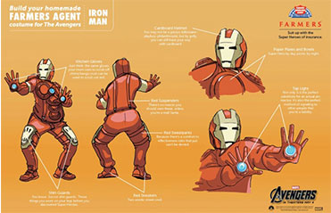

- Суперменов Супермен Суперменович, 1999
- Бетменовичевский Бетмен Бетменов, 1989
- Железяков Человек Старкович 1987
- Беляков Тор Одинович, 1999
- Капитановская Америка Капитановна, 1989
- Сумкин Фродо Бильбович, 1987
Кратко о классе
Marvel Comics и DC Comics разделяют владение маркой США на слова «супергерой» и «супергерои». Эти две компании владеют большинством самых известных и влиятельных в мире супергероев. Из «Значимой семёрки», выбранной The Comic Book in America: An Illustrated History (1989), Marvel принадлежат Человек-паук и Капитан Америка, а DC — Супермен, Бэтмен, Чудо-женщина, Капитан Марвел и Пластиковый человек. Как и многие не Marvel-овские персонажи, популярные в 1940-х, последние два были приобретены DC у ныне не существующих издательств.[5] Однако существуют значимые герои, принадлежащие другим, особенно с 1990-х, когда развились Image Comics и другие компании, позволявшие создателям сохранять марку и редакторский контроль над их персонажами. Хэллбой, Спаун и Непобедимый — из числа самых успешных принадлежащих создателям героев.
Общие черты костюма
Костюм супергероя помогает сделать его/её узнаваемым для общественности. Костюмы часто красочны, чтобы усилить визуальный призыв персонажа и часто включают имя и тему супергероя. К примеру, Сорвиголова (Daredevil) напоминает красного дьявола, костюм Капитана Америки своей расцветкой напоминает американский флаг, Бэтмен напоминает большую летучую мышь, а на костюме Человека-паука узор паутины. Традиция ношения супергероями масок (часто без видимых зрачков) и костюмов в обтяжку идёт от героя рассказа в картинках Ли Фалька «Фантом». Несколько супергероев, таких как Фантом, Супермен, Бэтмен и Робин, носят бриджи поверх этих костюмов. Это часто высмеивается как идея, что супергерои носят бельё поверх одежды.